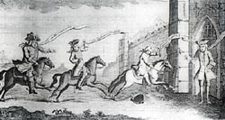
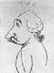
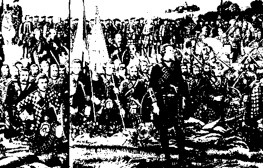
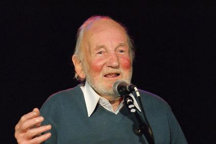

Johnnie Cope
Three different versions
(One from "Scots Musical Museum", vol.III, ascribed to Robert Burns, and two from J. Ritson's "Scotish Songs", vol.II)Battle of Prestonpans 21st September 1745
|
 John Cope reports his defeat to Berwick |
Tune 1 - Mélodie 1
Variant of tune 1 Tunes sequenced by Christian Souchon Burns version sung by Ceolbeg, (short excerpt from demo music clip) Tune 3 Pipes version by The Queen's Own Highlanders Another variant of tune 1 From the playing of Buddy McMaster San Francisco Scottish Fiddlers Newsletter June 1997 Sound background to this page. Fye gar rub her over we Strae Found in a 1610 MS, used by A. Ramsay in his "Gentle Shepherd" (1725), resembles the above "Jonnie Cope" tunes. |
 John Cope (1690-1760) by Townshend (pen and ink) |

|
To the tune:
The tune is: - in Oswald's "Companion", 1759, ix. 11 - in McLean's "Scots Tunes", c. 1772, 23; - in Aird's "Airs", 1783, ii. No. J2; - and in Johnson's "Museum". To the texts: "Sir John Cope trode the north right far" (version N°2) has been inserted in the works of Burns , for the first time by "Complete songs of Robert Burns Book online". His name was incidentally connected with it by the commentator William Stenhouse [in 1853], and the author of the "Online Book" deems it necessary to produce the evidence for this insertion. "[Sir John Cope] is the original of three different ballads, and its anonymous publication in the "Scots Musical Museum", volume III, 1790, No. 234, preceded the other two [ in Joseph Ritson's "Scotish Songs" (sic), Volume II, 1794 ] by four years. As may be seen in the facsimile of Law's MS., Burns marked it: ' Sir John Cope trode the North &c.: — Mr. Burns's old words.' The MS. of the song is at present unknown, but it is certain that he contributed it to Johnson's Museum. I was puzzled to reconcile this fact with his note in Cromek's "Reliques", 1808, 232, until I discovered from an examination of the "Interleaved Museum" that the first portion of the note in Cromek was not written by Burns, but by Robert Riddell thus: ' This satirical song was composed to commemorate General Cope's defeat at Preston Pans in 1745, when he marched against the Clans.' So far Riddell obviously did not know that Burns had anything to do with the verses; and the poet did not inform him in the studiously vague addition to the note which follows in his own handwriting: 'The air was the tune of an old song, of which I have heard some verses, but now only remember the title, which was "Will you go to the coals in the morning?" This forgotten song (version N°1) , consisting of eight stanzas and a chorus very different from that in our text, was published as a foot-note in Ritson's "Scotish Songs", 1794, ii. 84, beginning: 'Coup sent a challenge frae Dunbar,' , the chorus ending with the title quoted by Burns. Ritson on the same page has printed a different song of nine stanzas without chorus, opening with the same line as the other (Version N°3) , and he remarks that the version in the.Museum 'is a copy differing very much from both.' W. Stenhouse confused matters by asserting that Adam Skirving, the author of the song "Tranent Muir" , wrote also Johnie Cope of the Museum (Version N°2) . But Ritson, who published his collection nearlv thirty years before Stenhouse's "Illustrations" (1853) were issued, and took infinite pains over his works, was ignorant of the author of Johnie Cope, and expressed a wish to know the original, which, perhaps, is now impossible . On Stenhouse's unverified statement, Skirving's name is repeated as the author to this day . Much of Johnie Cope is carelessly written in faulty rhyme, but the sarcastic verses and the rollicking melody have perpetuated the song; and the common-place knight Sir John Cope would long ere this have passed into oblivion, but for the song. His circular march through the North of Scotland in 1745 and return voyage to Dunbar; his defeat at Gladsmuir, Preston Pans, or Tranent Muir are better known than the career of more distinguished men. Burns did not admire the air "Johnie Cope", and his verses are in evidence as a reason why he did not acknowledge them except in the MS. List for the Museum." Source: "Complete songs of Robert Burns Book online". Versions 2 and 1 are included in Hogg's "Jacobite Relics Vol. II under N°58 , page 111 ("Sir John Cope trode...") and N° 59 , page 112, ("Cope sent a challenge...") with the remark: "Both the sets of Johnnie Cope are taken from Gillchrist's collection, a book in 2 volumes published lately." A detailed account of the Battle of Prestonpans is given with the song "Ode to the Battle of Gladsmuir" . Excerpt from the Rev. Alexander B. Grosart's Introduction to his Edition of the "MSs at Towneley Hall" (1887): [Cope's] "sleeping" becomes rather mythical on investigation. On the occasion of her Majesty's first visit to her Scottish Capital, it so chanced that the Lord Provost over-slept him-self and was "too late" to receive the Queen. This led to many parodies on the Sir John Cope ballads; and indeed it has been thus utilized over and over with considerable effectiveness, e.g., in municipal and parliamentary elections." |
A propos de la mélodie:
La mélodie se trouve: - dans le "Companion" d'Oswald, 1759, ix,11; - dans les "Scots Tunes" de McLean, c. 1772, 23; - dans les "Airs" d'Aird, 1783, ii, N°J2; - et dans le "Musée" de Johnson. A propos des textes: "Sir John Cope a fait route au nord" (version N°2) a été ajouté à la liste des œuvres de Burns dans "Les œuvres poétiques complètes de Burns en ligne". Son nom avait été cité à propos de ce chant de manière seulement incidente par le commentateur W. Stenhouse [en 1853]. L'auteur d'"Online Book" juge donc nécessaire d'expliciter son choix. "[Sir John Cope fait...] est le prototype de 3 ballades différentes et sa publication dans le "Musée Musical Ecossais" - volume III, en 1790 sous le N°234, précéda celle des 2 autres de 4 années, [ par Joseph Ritson dans ses "Scotish" Songs" (sic). volume II, en 1794 ]. Comme il ressort du Manuscrit de Law, Burns avait noté en regard de 'Sir John Cope a fait route au nord...': - paroles originales de M. Burns' . Même si le manuscrit du chant a disparu aujourd'hui, il est certain que c'est Burns qui l'a composé pour le "Musée" de Johnson. J'étais intrigué par la contradiction entre cette remarque et sa note manuscrite qui figure dans les "Reliques" de Cromeck, 1808, 232 , jusqu'à ce que je remarque, en examinant le "Musée interfolié" , que la première partie de ladite note n'a pas été rédigée par Burns, mais par Robert Ridell, à savoir: 'Ce chant satirique fut composé pour commémorer, la défaite du Général Cope à Prestonpans en 1745 quand il se confronta aux Clans. ' Il est clair que Riddell ne savait pas que Burns avait travaillé sur cette poésie; d'autant que ce dernier laissait planer le doute dans le complément qu'il ajouta de sa main à cette note: "L'air était le timbre d'une ancienne chanson, dont j'ai entendu quelques couplets, mais dont je ne me souviens à présent que du titre: "Iras-tu à la mine ce matin?" Ce chant oublié (version N°1) , se compose de 8 couplets et d'un refrain très différents de ceux de notre texte. Il a été publié sous forme de note dans les 'Scotish Songs' de Joseph Ritson, 1794, ii, 84 et commence par les mots : " Coup (=Cope) écrivit depuis Dunbar , et le refrain se termine par le titre cité par Burns. Sur la même page, Ritson fait figurer un chant différent de 9 strophes sans refrain, qui commence de la même façon que le précédent ( Version N°3 ) et il fait la remarque que la version du "Musée" ' est une leçon très différente de ces deux textes' . C'est Stenhouse qui a tout embrouillé en affirmant qu'Adam Skirving , l'auteur de Tranent Muir , était aussi celui du "Johnnie Cope" du "Musée" ( Version N°2 ). Or, Ritson qui publia son recueil presque 30 ans avant les "Illustrations" de Stenhouse (1853), et qui était d'une scrupuleuse exactitude, dit ignorer qui était l'auteur de ce "Johnnie Cope", tout en souhaitant qu' on trouve un jour l'original, ce qui est, peut-être, désormais impossible . C'est sur la foi de l'affirmation infondée de Stenhouse qu'on cite partout le nom de Skirving comme auteur de ce chant jusqu'à ce jour. Pour l'essentiel, "Johnnie Cope" est mal écrit et les rimes sont approximatives. Mais son ton sarcastique et sa mélodie entraînante en ont fait un chant immortel sans lequel l'obscur chevalier Sir John Cope serait depuis longtemps tombé dans l'oubli. Son périple par le nord de l'Ecosse en 1745 et son retour par bateau jusqu'à Dunbar, sa défaite à Gladsmuir-Preston Pans-Tranent Muir sont mieux connus que la carrière de personnages bien plus brillants. Burns n'aimait ni la mélodie de "Johnnie Cope", ni ses vers. C'est, à l'évidence, la raison pour laquelle il ne les revendiqua pas, si ce n'est sur la "Liste des Manuscrits destinés au Musée". Source: "Complete songs of Robert Burns Book online". Les versions 2 et 1 se trouvent dans les "Reliques Jacobites", vol. II, de Hogg, sous les N° 58, page 111 ("Sans rencontrer...") et N° 59 , page 112 ("Cope écrivit...") avec la remarque: "Ces deux versions de Johnnie Cope sont tirées du recueil de Gillchrist, un ouvrage en deux volumes publié récemment." On trouvera un récit détaillé de la bataille de Prestonpans avec le chant "Ode to the Battle of Gladsmuir" . Extrait de l'Introduction par le Rév. Alexandre B. Grosart aux "Manuscrits de Towneley Hall"qu'il publia en 1887: "Le sommeil [de Cope], quand on y regarde de plus près, apparaît comme un mythe. Lors de la première visite de la Reine Victoria à sa capitale écossaise, il advint que le Lord Prévôt (le maire) oublia de se réveiller et arriva en retard à la réception royale. Cet incident fut à l'origine de nombreuses parodies des ballades de Johnnie Cope, telles qu'on en fit par la suite, tant et plus, à des fins électorales, municipales ou parlementaires." |
| Version 1: Published by J.Ritson in 1794 | Version 2: Scots Musical Museum III, N°234, 1790 (*) | Version 3: J. Ritson (published in 1794) |
|---|---|---|
|
1. Cope (*) sent a challenge frae Dunbar
Sayin "Charlie meet me an' ye daur An' I'll learn ye the airt o' war If ye'll meet me in the morning." Chorus Hey! Johnnie Cope are ye wakin' yet? Or are your drums a-beating yet? If ye were wakin' I wad wait Tae gang tae the coals in the morning.(**) 2. When Charlie looked the letter upon He drew his sword, his scabbard from(***) Come, follow me, my merry men And we'll meet Johnnie Cope in the morning. 3. Now Johnnie, be as good as your word Come, let us try baith fire and sword And dinna flee like a frichted bird That's chased frae its nest i' the morning. 4. When Johnnie Cope he heard o' this He thocht it wouldna be amiss Tae hae a horse in readiness Tae flee awa in the morning. 5. Fye now, Johnnie, get up an' rin The Highland bagpipes mak' a din It's better tae sleep in a hale skin For it will be a bluidie morning. 6. When Johnnie Cope tae Dunbar cam They speired at him, "Where's a' your men?" "The de'il confound me gin I ken For I left them a' in the morning." 7. Now Johnnie, troth ye werena blate Tae come wi' news o' your ain defeat And leave your men in sic a strait Sae early in the morning. 8. In faith, quo Johnnie, I got sic flegs Wi' their claymores an' philabegs Gin I face them again, de'il brak my legs So I wish you a' good morning. (*) These lyrics have "Coup" instead of "Cope" throughout. (**) John Stuart Blackie in his "Scottish Song", published in Edinburgh and London in 1889, writes : "The allusion in the refrain is to the coal mines at Tranent [near Prestonpans]...Adam Skirving, a farmer in the district, humorously supposes one of the miners of the neighbourhood being in a greater hurry to go to his daily underground task, than the king's general was to leave his bed and do his military duty". Tranent is usually regarded as the oldest mining community in Scotland. The last pit closed in 1963. An opencast coal mine opened to the north east of Tranent in the 1970ies ceased operation in 2000. (***) The day before the battle the Prince had drawn his sword in presence of his army, exclaiming: "My friends I have flung away the scabbard!" |
1. Sir John Cope trode the north right far,
Yet ne'er a rebel he cam naur, Until he landed at Dunbar Right early in a morning. Chorus Hey Johnie Cope are ye wauking yet, Or are ye sleeping I would wit: O haste ye get up for the drums do beat, Of fye Cope rise in the morning. 2. He wrote a challenge for Dunbar, Come fight me Charlie an ye daur; If it be not by the chance of war I'll give you a merry morning. 3. When Charlie look'd the letter upon He drew his sword and scabbard from- "So Heaven restore to me my own, I'll meet you, Cope, in the morning." 4. Cope swore with many a bloody word That he would fight them gun and sword, But he fled frae his nest like an ill scar'd bird, And Johnie he took wing in the morning. 5. It was upon an afternoon, Sir Johnie march'd to Preston town; He says, "My lads come lean you down, And we'll fight the boys in the morning." 6. But when he saw the Highland lads Wi'tartan trews and white cokauds, Wi' swords and guns and rungs and gauds, O Johnie he took wing in the morning. 7. On the morrow when he did rise, He look'd between him and the skies; He saw them wi' their naked thighs, Which fear'd him in the morning. 8. O then he flew into Dunbar, Crying for a man of war; He thought to have pass'd for a rustic tar, And gotten awa in the morning. 9. Sir Johnie into Berwick rade, Just as the devil had been his guide; Gien him the warld he would na stay'd To foughten the boys in the morning. 10. Says the Berwickers unto Sir John, O what's become of all your men, In faith, says he, I dinna ken, I left them a' this morning. 11. Says Lord Mark Kerr, ye are na blate, To bring us the news o' your ain defeat; I think you deserve the back o' the gate, Get out o' my sight this morning. (*) Ascribed to Robert Burns by "Complete Songs of R.Burns". (Erroneously) ascribed by W. Stenhouse to the tenant farmer in East Lothian, Adam Skirving, author of Tranent Muir |
1. Cope (*) sent a challenge from Dunbar,
Saying, "Sir, come, fight me, if you dare, If it be not by the chance of war, I'll catch you all in the morning." 2. Charlie look'd the letter upon He drew his sword his scabbard from Saying, "Come, follow me, my merry men, And we'll visit Cope in the morning. 3. My merry men, come, follow me, For now's the time I'll let you see, What a happy nation this will be, And we'll visit Cope in the morning. 4. 'Tis Cope, are you waking yet? Or are you sleeping? I would wit; 'Tis a wonder to me when your drums beat, It does not waken you in the morning." 5. The Highland men came down the lawn, With sword and target in their hand, They took the dawning by the end, And they visited Cope in the morning. 6. For all their bombs and bomb-granades 'Twas when they saw the Highland lads, They ran to the hills as if they were calves, And scour'd off early in the morning. 7. "For all your bombs, and your bomb shells, 'Tis when they saw the Highland lads, They ran to the hills like frighten wolves, All pursued by the clans in the morning. 8. The Highland knaves, with loud huzzas, Cries, 'Cope, are you quite awa?' Bide a little, and shake a paw, And we 'll give you a merry morning." 9. Cope went along unto Haddington,(*) They ask'd him where was all his men; "The pox on me if I do ken, For I left them all this morning." (*) 10 miles East of Tranent Muir (on the Dunbar road).  The prayer for victory before the battle of Prestonpans |
| Version 1: Publiée par J. Ritson en 1794 | Version 2: Musical Museum vol. III, N°234, 1788 (*) | Version 3: J. Ritson (publiée en 1794) |
|---|---|---|
|
1. Cope (*) écrivit depuis Dunbar
"Charlie veux-tu te battre encore? La guerre, vois-tu, c'est un art, Je te l'apprendrai dès l'aurore." Refrain Hé, Johnnie Cope, hé, veillez-vous toujours? En êtes-vous encore à battre le tambour? Si vous êtes éveillé, je veux attendre encore: Avant d'aller à la mine à l'aurore.(**) 2. Lorsque Charlie eut lu la lettre Il dégaina, (***) criant bien fort; "Amis, suivez-moi, sus au traitre, Nous l'affronterons, dès l'aurore!". 3. "Allons, Johnnie, tiens donc parole! Qui de nous deux est le plus fort Au jeu des armes. Ne t'envole Point, oiseau craintif à l'aurore!" 4. Sitôt que Johnnie Cope l'apprit, Il pensa qu'il qu'il aurait bien tort De ne pas avoir près de lui Un cheval pour fuir dès l'aurore. 5. Or donc, Johnnie, debout et pars! Les cornemuses jouent si fort! Mieux vaut dormir sans une escarre. Le sang coulera dès l'aurore. 6. Quand Johnnie Cope fut de retour, On lui dit "Où sont vos renforts," Il dit "Dieu seul le sait. Car pour Moi, je suis parti dès l'aurore." 7. "D'annoncer ta propre défaite N'as-tu point honte ni remords? Ni de laisser dans la détresse Tes hommes à la prime aurore? 8. - Quiconque entendit le vacarme Des gens en kilts et aux claymores, Aimerait mieux perdre son âme Que de les affronter encore."
Traduction Christian Souchon (c) 2006
|
1. Sans rencontrer âme qui vive,
Sir John Cope a fait route au nord, Et lorsqu'à Dunbar il arrive C'est pour y voir poindre l'aurore. Refrain Hé! Johnnie Cope, es-tu donc en marche toujours?, Je crois bien que tu dors encore: Lève-toi, entends les tambours, Fi donc, Cope, debout c'est l'aurore! 2. Il lance un défit de Dunbar: "Charlie, combats-moi si tu l'oses- Guerre n'est point jeu de hasard- Et dès l'aurore aux doigts de roses." 3. Dès que Charles eut lu la lettre, Il dégaine et s'écrie bien fort: (**) "Pour que de mon bien je sois maître, Le Ciel fait luire cette aurore." 4. Voilà Johnnie Cope qui jure Qu'il combattra jusqu'à la mort, Mais la timide créature, Devait fuir le nid, dès l'aurore. 5. Sir John Cope entra dans Preston, Quand le soleil brillait encore. "Vous pouvez tous faire un bon somme, Nous vaincrons demain à l'aurore." 6. Mais lorsqu'il vit les Montagnards Et les cocardes qu'ils arborent, Leurs épées, gourdins et poignards, Johnnie s'enfuit avec l'aurore. 7. Le lendemain, il se réveille. Mais ne voit rien dans le décor, Si ce n'est ces jambes vermeilles Qui le menacent dès l'aurore. 8. Vite, il s'en retourne à Dunbar. Réclame un navire en renfort: Il s'est conduit comme un froussard, Qui disparaît avec l'aurore. 9. Sir Johnnie va jusqu'à Berwick, Où l'appelle son triste sort. Il n'eût voulu pour un empire Affronter ces gens à l'aurore. 10. Quant à ceux de Berwick, ils disent, "Où sont tes soldats, sont-ils morts? -Je dois l'avouer avec franchise: Je les ai quittés à l'aurore." 11. Lord Mark Kerr dit: "C'est ta défaite Que tu nous apprends sans remords; Tu mérites que je te mette, A la porte à la prime aurore ." Traduction Christian Souchon (c) 2006 (*) Attribué à R. Burns par "Complete Songs of R.Burns". Attribué (à tort) par W. Stenhouse à Adam Skirving, métayer en East Lothian, auteur de Tranent Muir . |
1. Cope écrivit depuis Dunbar:
"Monsieur, osez-vous m'affronter Si ce n'est le fait du hasard, Ce matin, je vais vous mâter." 2. Charles, ayant lu la missive, Sortit l'épée de son fourreau, S'écriant "Qui m'aime me suive! Ce matin, il n'est point trop tôt. 3. Allons donc, qui m'aime me suive! Il est grand temps de vous montrer Qu'un ère de bonheur arrive. Dès ce matin! L'heure a sonné. 4. Cope, le sommeil te fuit-il? Ou dors-tu? Je ne le crois point. Ces tambours roulant à l'envi T'on réveillé, de bon matin!" 5. Les Highlanders par la prairie Targe au bras et sabre à la main Quand l'aurore s'est évanouie, Affrontent Cope ce matin. 6. Malgré leurs canons, leurs bombardes, Quand ils voient poindre les tartans Ceux de Cope prennent le large Tels des veaux, au matin naissant. 7. "Malgré vos bombes, vos grenades, Quand ils voient poindre les tartans, Vos loups fuient - quelle débandade!- Ce matin, confrontés aux clans." 8. Ces gredins de Highlanders crient: "Cope, pourquoi pars-tu déjà? Serre-moi la main, je te prie, Un matin comme celui-là! 9. Cope à Haddington (**) est allé. "Où sont donc passés tous vos gens?" - Comment le savoir? Je les ai Dès le matin laissés en plan." Traduction Christian Souchon (c) 2010 (*) à 15 km à l'est de Tranentmuir en direction de Dunbar. La prière pour la victoire avant la bataille de Prestonpans |
|
The "Corries" singing "Johnnie Cope" (version N°1) |
 Bob Bertram (1928-2009) sings his satirical song making fun of "Johnnie Dope" (John Profumo) and "Uncle Mac" (Harold McMillan), the protagonists of the famous 1963 political scandal. (Link to the "Tobar an Dalchais" site) |
Ewan McColl (1915-1989) singing "Johnnie Cope" (version N°1) |
DONALD LOST HIS MARBLES
A "wee daft musical dalliance" by Alan Reid on Donald Trump's medical merits.
Composed and performed during the darkest hours of the April-May 2020 health crisis,
(after Scottish entertainer Andy Stewart's wellknown hit "Donald where's your troosers,
a contribution to solving the nagging problem: "what do they wear under their kilt?")
 Click here to display the lyrics
Click here to display the lyrics